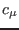
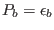
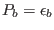

Next: The local, weak-equilibrium stability Up: The turbulence model Previous: The non-local, exact weak-equilibrium Contents
INTERFACE:
subroutine cmue_b(nlev)DESCRIPTION:
This subroutine is used to update the quantities
,  and , defined in (76), from which all turbulent
fluxes can be computed. This done exactly as described in section 4.24, with
the exception that equilibrium
and , defined in (76), from which all turbulent
fluxes can be computed. This done exactly as described in section 4.24, with
the exception that equilibrium
 and
 is assumed
in computing the non-linear terms in (67), leading to the particularly
simple expressions
and
 is assumed
in computing the non-linear terms in (67), leading to the particularly
simple expressions
USES:
use turbulence, only: an,as,at use turbulence, only: cmue1,cmue2,gam use turbulence, only: cm0 use turbulence, only: cc1 use turbulence, only: ct1,ctt use turbulence, only: a1,a2,a3,a4,a5 use turbulence, only: at1,at2,at3,at4,at5 IMPLICIT NONEINPUT PARAMETERS:
number of vertical layers integer, intent(in) :: nlevBUGS:
Test stage. Do not yet use.REVISION HISTORY:
Original author(s): Lars Umlauf